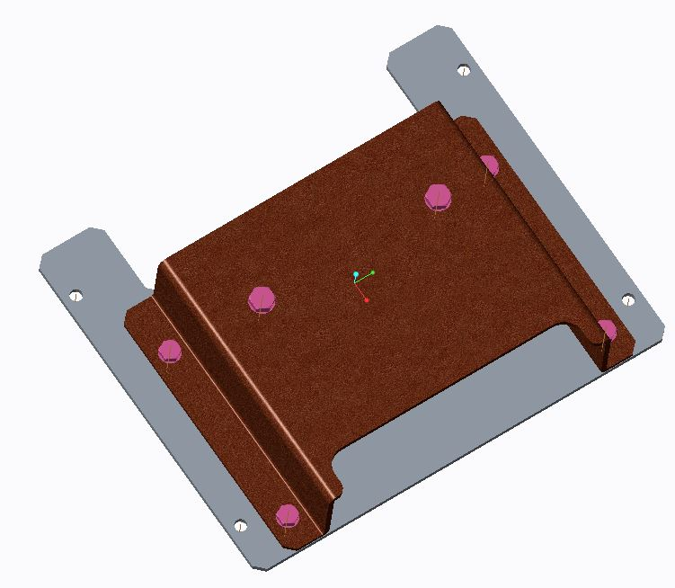
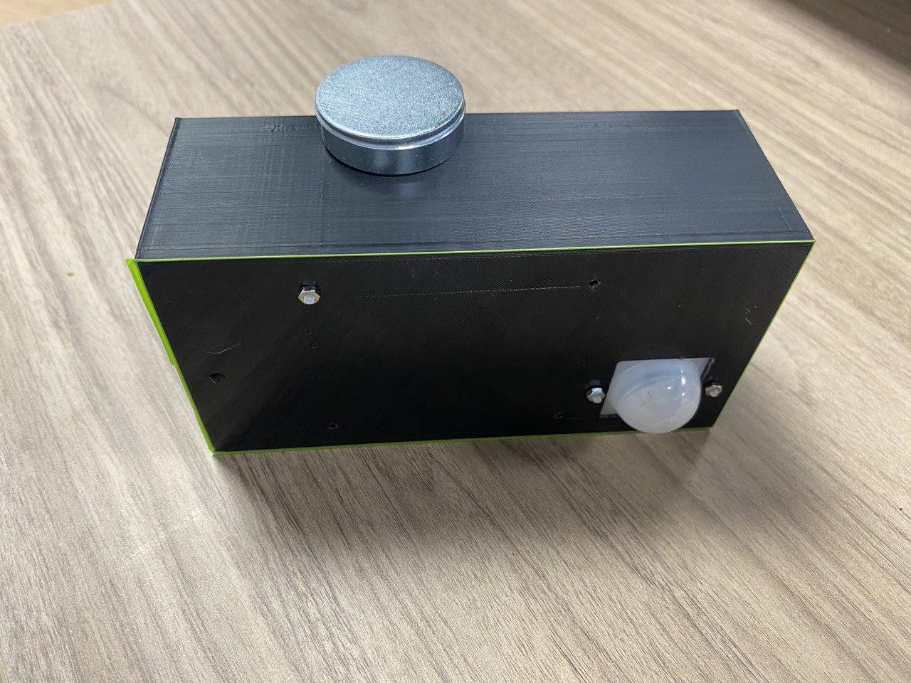
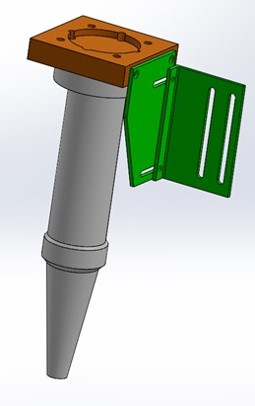

Projects
Air Show 2016
Polytechnic Internship, Product Design Intern
I designed an electronic component housing for In-Flight Entertainment (IFE) System, attached on the commercial seats for Air-bus commercial aircraft variants.
IFE housing is lightweight and compact, fits ideally under the commercial seat with little to no restriction to consumers leg movement. From the previous design, it is 30% lighter yet structurally fulfilling the requirements
Design was selected to be showcased in Air show 2016.

Travel Protable Alarm Laser Shield
(Travel PALS)
Engineering Innovation Design Module
Portable secuirty system with warning enhancements, using laser and receiver to detect movements.
Design is made of 3 different modular components.
- Main module : Housed photoresistor, MCU, batteries.
- Camera : Mini Arduino Camera for photography purpose.
- Laser : Customised laser diode.
Travel PALS benefits travellers as it acts as a security device during hotel stay aboard. It is small and compact with wireless enabled capabilities.
Product is cost effective and consumers can benefit from the size and durability of the product.
Passive Infrared Sensor (PIR) Mount
University Internship, Research Intern
Housing 'raspberry pi' and 'motion sensor' with 3D printing considerations and have mounting capabilities.

I refine the design to be versatile. Mount orientation of the motion sensor can have a top-down approach or side-side approach. Unlike many products in the marktet only a single orientation is adopted and it has a user-friendly design which does not require fasteners.
Laser Solder Smoke Absorber
University Internship, Research Intern
Product is design to clear the fumes during enclosed laser soldering operations.
Fastener-free, clip-on methods were use for easy user access.
Laser soldering operation varies between different industries. Future modifications of more/less fans and carbon filters compartments will benefit organisations during multipurpose operations.
Lizard Gripper Mount
University Internship, Research Intern
Lizard gripper function is used to pick and place a wide variety of objects of various shape or size.
Tough PLA was used in the 3D printed mount to allow rigid support to the gripper instead of conventional PLA. Mount was design to fit Festo's Lizard gripper on Delta's Electronic robot arm. Design specifications were based on the movement of the robot arm and the area of object picking.
Different robot arm have different fastening locations. 3D printing is made cheap and available and can accommodate to various robot arms.

Second variation was designed to allow an adjacent camera sensor to detect precise distance to the Lizard gripper and the object distance during automation. This design was modular to enable the fit of a different camera sensors.
Mount weight is substantial reduced from aluminum to PLA without compromise on the loading ability.
Sugar Cane Machine
Machine Element Design Module
Requirements of motor input and the force output were given.
Calculations were acheieve and layout was planned to fit the requirements.
Components like rollers, supports and housing to fit bearings, clips, gears, pulleys, etc. were modelled on SolidWorks.
Considerations of tolerance and placement of components were taken into account during design modelling, assembly and drafting.
The project was a success. Met all requirements and limitations.
- © Untitled
- Design: HTML5 UP